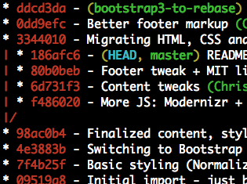
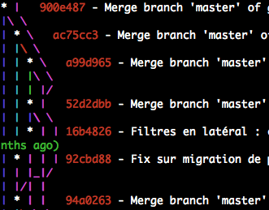

Created by Charles Sarrazin / @csarrazi
One commit should have a reduced perimeter.
A commit should contain a single feature, or sub-feature.
At all times, the application should be in a consistent state.
All commits should leave the application in a working state. Thus, you should not leave WIP commits on a given branch or PR.
You need to master add and reset, but also diff, show and of course, commit.
Check the details of all new untracked files.
$ git status
...
Untracked files:
(use "git add ..." to include in what will be committed)
vendor/
...
$ git config --global status.showUntrackedFiles all
$ git status
...
Untracked files:
(use "git add ..." to include in what will be committed)
vendor/scripts/bootstrap.min.js
vendor/scripts/jquery.min.js
vendor/scripts/underscore.js
...
The stage, or index: what is validated to be committed.
Lets the user customize precisely what he wishes to commit.
git add pathspec... = take a snapshot of pathspec and add this in the next commit's code.
Synonym: git stage. Nothing in common with svn add.
Mandatory to version a new file (untracked), unlike a file which is already versioned
Diff version
$ git diff --staged
diff --git c/index.html i/index.html
index 5237399..85e642f 100644
--- c/index.html
+++ i/index.html
@@ -1,5 +1,5 @@
<!doctype html>
-<html>
+<html lang="fr">
Snapshot version (whole file)
$ git show :0:pathspec
<!doctype html>
<html lang="fr">
<head>
<meta charset="utf-8">
<title>Git ProTips</title>
...
Most of the time, we don't care about whitespaces.
$ git diff
...
<!doctype html>
-<html>
+<html lang="fr">
<head>
- <meta charset="utf-8">
- <title>Git ProTips</title>
+ <meta charset="utf-8">
+ <title>Git ProTips</title>
...
$ git diff -w
...
<!doctype html>
-<html>
+<html lang="fr">
<head>
...
Line by line may be not enough, and not granular enough...
$ git diff --word-diff-regex=.
...
<!doctype html>
<html{+ lang="fr"+}>
...
$ git diff --color-words=.
...
<!doctype html>
<html lang="fr">
...
To configure this once and for all:
$ git config --global diff.wordRegex .
$ git diff --word-diff
...
<!doctype html>
<html{+ lang="fr"+}>
...
Who said we needed to stage the whole file at a time?
$ git add -p index.html
...
<!doctype html>
-<html>
+<html lang="fr">
<head>
...
Stage this hunk [y,n,q,a,d,/,j,J,g,e,?]? y
...
<h1>Git ProTips</h1>
+ <footer>© 2014 Ma Boîte</footer>
...
Stage this hunk [y,n,q,a,d,/,K,g,e,?]? n
This is a critical feature to know, because in real-life, we always have 2 or 3 different things going on in the same file...
To remove a file (or all files) from the stage, git reset.
$ git reset index.html
Unstaged changes after reset:
M index.html
Canceling the whole stage:
$ git reset
Unstaged changes after reset:
M index.html
Just like you can add files, you can unstage fragments.
$ git reset -p index.html
...
...
<!doctype html>
-<html>
+<html lang="fr">
<head>
...
Unstage this hunk [y,n,q,a,d,/,j,J,g,e,?]? n
...
<h1>Git ProTips</h1>
+ <footer>© 2014 Ma Boîte</footer>
...
Unstage this hunk [y,n,q,a,d,/,K,g,e,?]? y
git add . is not enough before Git 2.0: Only the working directory is taken into account, not removed files.
Changes not staged for commit:
...
deleted: index.html
Untracked files:
...
home.html
To handle both known and untracked files, you should use -A (--all):
$ git add -A && git status
On branch master
Changes to be committed:
...
renamed: index.html -> home.html
git commit --amend replaces the current state.
Did you forget to add a dependency?
$ git add vendor/scripts/underscore.min.js
$ git commit --amend --no-edit
Versioned a sensitive file?
$ git rm --cached config/database.yml
$ echo config/database.yml >> .gitignore && git add .gitignore
$ git commit --amend --no-edit
Made a typo in the message?
$ git commit --amend -m 'The message without typos'
git show [object] displays a commit (by default HEAD), a tree, a snapshot...
$ git show # ou explicitement : git show HEAD
commit 8a5a383
Author: Charles Sarrazin <charles@sarraz.in>
Date: Sun Oct 26 15:04:17 2014 +0100
First index
diff --git a/index.html b/index.html
...
The content of app/initialize.js on the legacy branch?
$ git show legacy:app/initialize.js
'use strict';
...
Saving untracked files, and adding a useful message:
(master *+%) $ git stash save -u 'BS3 migration'
Saved working directory and index state On master: BS3 migration
HEAD is now at 8a5a383 Asynchronous GA Trackers
(master $) $
In order to let your prompt remind you that you have some stash, don't forget to activate the GIT_PS1_SHOWSTASHSTATE environment variable, which will add a $.
To fetch the stash, do not use apply, prefer pop:
(master $) $ git stash pop --index
...
(master *+%) $
pop actually tries to apply the stash and, if it works, follows up with a drop. There's nothing worse than leaving a stash which was already reintegrated.
Even if the shash saves the stage by default, the stash does not restore it by default, in order to prevent automatic merges in the stage. So please always try first with --index.
By default, the log is too verbose, without graph, etc.
$ git config --global alias.lg "log --graph \
--pretty=tformat:'%Cred%h%Creset -%C(auto)%d%Creset %s \
%Cgreen(%an %ar)%Creset'"
--grep on complete messages
--author on the name / email of the author
-- pathspec... on paths (directories, files)
-n limits the number of lines after filtering
$ git lg --author=Beauchamp --grep '^Merge' -n10 -- app/Resources/sass
Want to see the commits between two branches / tags? (in short, get back to their common ancestor) Use A...B.
|  |
|
Instead of using git blame in order to find the culprit of a certain commit, you should search on the active contents of the diffs: results will be more precise and relevant. Also, it works for deleted lines.
Options -S (inserts OR deletions) and -G (all the diffs)
$ git lg -S "Donec sed" -1 -p index.html
...
* 6d731f3 - Content tweaks (Charles Sarrazin 1 year, 1 month ago)
|
| diff --git a/index.html b/index.html...
...
| @@ -60,18 +60,18 @@
...
| <h2>Three-point rebasing</h2>
| - <p>Donec sed odio dui. Cras justo odio, dapibus ac facilisis in, egestas eget quam. Vestibulum id ligula porta felis euismod semper. Fusce dapibus, tellus ac cursus commodo, tortor mauris condimentum nibh, ut fermentum massa.</p>
| + <p>Cras justo odio, dapibus ac facilisis in, egestas eget quam. Vestibulum id ligula porta felis euismod semper. Fusce dapibus, tellus ac cursus commodo, tortor mauris condimentum nibh, ut fermentum massa.</p>
| <p><a class="btn" href="#">View details »</a></p>
...
Since Git 1.8.4 (April 2013), it is also possible to filter by file fragment, and by function body. You can use either an interval(-L 1,100:index.html), or a regex:
$ git lg -L :getCheckIns:app/lib/persistence.js
* 12164bc - Refactoring gestion Check-In Details, et gestion corner-cases (Charles Sarrazin 2 days ago)
|
| diff --git a/spa-final/app/lib/persistence.js b/spa-final/app/lib/persistence.js
| --- a/spa-final/app/lib/persistence.js
| +++ b/spa-final/app/lib/persistence.js
| @@ -81,4 +86,7 @@
| function getCheckIns() {
| - return collection.toJSON();
| + return collection.map(modelWithCid);
| }
|
* d714350 - Initial import (Charles Sarrazin 1 year ago)
diff --git a/app/lib/persistence.js b/app/lib/persistence.js
--- /dev/null
+++ b/app/lib/persistence.js
@@ -0,0 +34,4 @@
+function getCheckIns() {
+ return collection.toJSON();
+}
By default, when running git push only, Git will try:
Before 2.0: all tracked branches with the same name
After 2.0: the current branch if the tracked* branch has the same name**
What we want: the current, regardless of the remote name**
$ git config --global push.default upstream
The first time you want to push a branch that you wish to track later, don't forget to track the upstream:
(stats-v3) $ git push -u origin stats
Counting objects: 5, done.
Delta compression using up to 4 threads.
Compressing objects: 100% (3/3), done.
Writing objects: 100% (5/5), 488 bytes | 0 bytes/s, done.
Total 5 (delta 0), reused 0 (delta 0)
To git@github.com:tdd/private-tests.git
* [new branch] stats -> stats
Branch stats set up to track remote branch stats from origin.
Pre-push habit: cleanup your local history, which should be more or less dirty.
$ git lg @{u}..
$ git rebase -i @{u}
The interactive rebase helps us cleanup our work before sharing it with the rest of the team.
Yet another reason not to push too often. You should commit often (10-30 times a day), but push more rarely (2-3 times/day).
By default, git pull finishes with a merge. This is stupid.
When you pull, you do not actually merge a remote branch locally: you update your branch with the latest changes.
Also, this makes your graph less readable:
A pull should rather Replay your local work on the remote branch: by definition, a rebase.
However, you should make sure not to inline a merge in the local copy by mistake
In order to prevent this:
$ git config --global pull.rebase preserve
Most of the time, when you create a branch, it is to work on the branch directly.
(master) $ git branch feature
(master) $ git checkout feature
(feature) $
(master) $ git checkout -b feature
(feature) $
Note that if you wish to collaborate on a branch already existing on the remote, a simple checkout is enough.
(master) $ git branch -a
* master
origin/master
origin/topic
(master) $ git checkout topic
Branch topic set up to track remote branch topic from origin.
Switched to a new branch 'topic'
(topic) $
Two options are useful for git branch:
-a lists all local and remote branches.
-vv adds the first commit lines and, for the tracked branch, the state of the tracking.
(2014-octobre u+1) $ git branch -avv
* 2014-octobre abaca0f [origin/2014-october: ahead 1] Removing old demos
legacy 41b5bf7 [origin/legacy] Bash packaging script + debrief Zip file
master 0208acb [origin/master] Fix .groc.json
v2014 521350a [origin/v2014: behind 2] Backport Backbone plugins target link towards backplug.io
v2015 27b1791 [origin/v2015] Updated docblocks
remotes/origin/2014-october 10ad1b1 Updated annotated source code
remotes/origin/bs3 49bc984 In-session tweaks
remotes/origin/bs3-basis 650f025 Tweak export connectivity
...
Use case: commit 73abc4f is the source of the bug, and you want to know where you need to propagate the fix.
(master) $ git branch -a --contains 73abc4f
* master
stats
origin/master
origin/3-2-stable
origin/stats
Use case: Are there any branches not yet merged in master?
(master) $ git branch -a --no-merged
stats
origin/fix/143
origin/fix/148
origin/stats
origin/max/experiment-web-audio
You should only merge when you need to identify that a feature has been integrated in the target branch (bugfix, feature, story, etc.).
If the branch is a child, prevent fast-forwards:
(master) $ git merge --no-ff fix/143
Want to details the merged commits?
(master) $ git merge --log stats
Or, if you want to do it all the time:
(master) $ git config --global merge.log true
Very often, when you merge, rebase, cherry-pick or simply checkout, this is made from/to the previous branch (the one you were on earlier).
Just as you can use cd - in your shell to go back to the previous directory, you can use - to go back to the previous branch. This is a shortcut for the classic @{-1}.
(master) $ git rebase master experiment
(experiment) $ git checkout -
(master) $
(fix/148) $ git checkout 3-2-stable
(3-2-stable) $ git merge -
(3-2-stable) $ git checkout master
(master) $ git cherry-pick -
(master) $
Use case: You thought that your feature would have taken 1 commit, and 10 minutes...
However, 3 commits and 2 hours later, here you are, and there's still work to do!
You should have made a branch...
(master) $ git branch fix/158
(master) $ git reset --soft HEAD~3
(master +) $ git checkout fix/158
(fix/158) $
Fetching a unique commit, without its history.
(master) $ git cherry-pick 3-2-stable
git cherry will help you choose candidates:
(master) $ git cherry -v HEAD topic
+ 3abb73d7cc8d8655f8b99816fed56c6030c28551 /img/ -> /images/
- ba05b8d03de5540181af34a10f1b07debb0ea5fc Stats JS
+ 363f53d53d78384f29dc68d900b04ac0b56d20f6 Nav stats
Or, using git log --cherry (preferred):
(master) $ git lg --cherry HEAD...topic
* 363f53d - (topic) Nav stats (Charles Sarrazin 1 year, 1 month ago)
= ba05b8d - Stats JS (Charles Sarrazin 1 year, 1 month ago)
* 3abb73d - /img/ -> /images/ (Charles Sarrazin 1 year, 1 month ago)
Most conflicts are simple to handle.
You just need the correct methodology:
git status as soon as possible to check what is wronggit mergetool)git add to mark the conflict as resolved.git commit or git rebase --continueBy default, merge style:
<<<<<<< HEAD
SVN est un outil de gestion de source largement répandu
et extrêmement pratique.
=======
SVN est un outil de gestion de source largement répandu
malgré sa profonde stupidité et la plaie de son usage.
>>>>>>> truth
It is often useful to see the pre-conflict version:
<<<<<<< HEAD
SVN est un outil de gestion de source largement répandu
et extrêmement pratique.
||||||| merged common ancestors
SVN est un outil de gestion de source largement répandu.
=======
SVN est un outil de gestion de source largement répandu
malgré sa profonde stupidité et la plaie de son usage.
>>>>>>> truth
$ git config --global merge.conflictStyle diff3
Sometimes, using the diff is not enough, especially when the conflicting code references other parts, which could sucessfully be merged.
In this case, you can examine the snapshots from the recipient-side:
(master *) $ git show :2:intro.md
# ou : git show HEAD:intro.md
# ou : git show master:intro.md
Or from the merged code side:
(master *) $ git show :3:intro.md
# ou : git show MERGE_HEAD:intro.md
# ou : git show truth:intro.md
Or from the common ancestor (before the divergence):
(master *) $ git show :1:intro.md
Very rarely, even snapshots may not be enough to understand the problem, and you may want to retrace the changes until the head of the branches.
This can be done using the already seen A...B syntax, but as during a merge, Git has access to all the context, a simple --merge is enough:
(master *) $ git lg --merge -p intro.md
* 9d8dafd - (truth) Truth (Charles Sarrazin 12 minutes ago)
...and here the diff...
* f068b20 - (HEAD, master) Disinfo (Charles Sarrazin 12 minutes ago)
...and here the diff...
(master *) $
If you really don't have enough information to resolve the conflict, you can cancel the conflict and return to a clean state:
(master *) $ git merge --abort
(master) $
Or, when in a rebase:
(master *) $ git rebase --abort
(master) $
You can find the slides on github